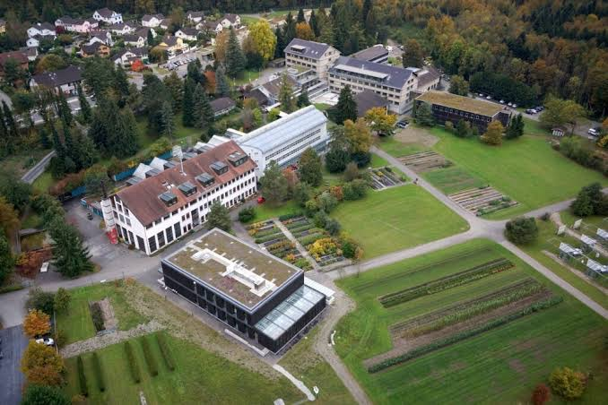
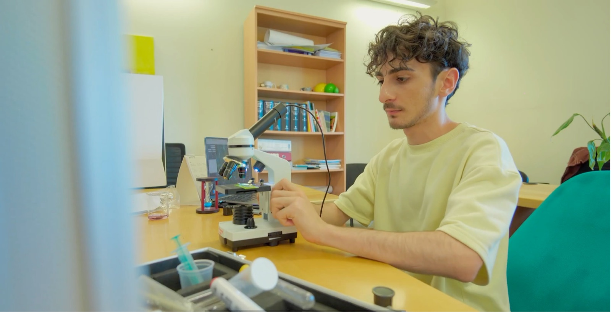
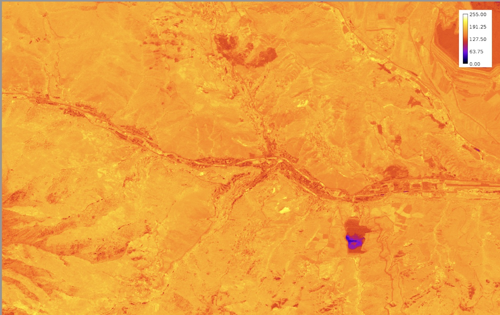
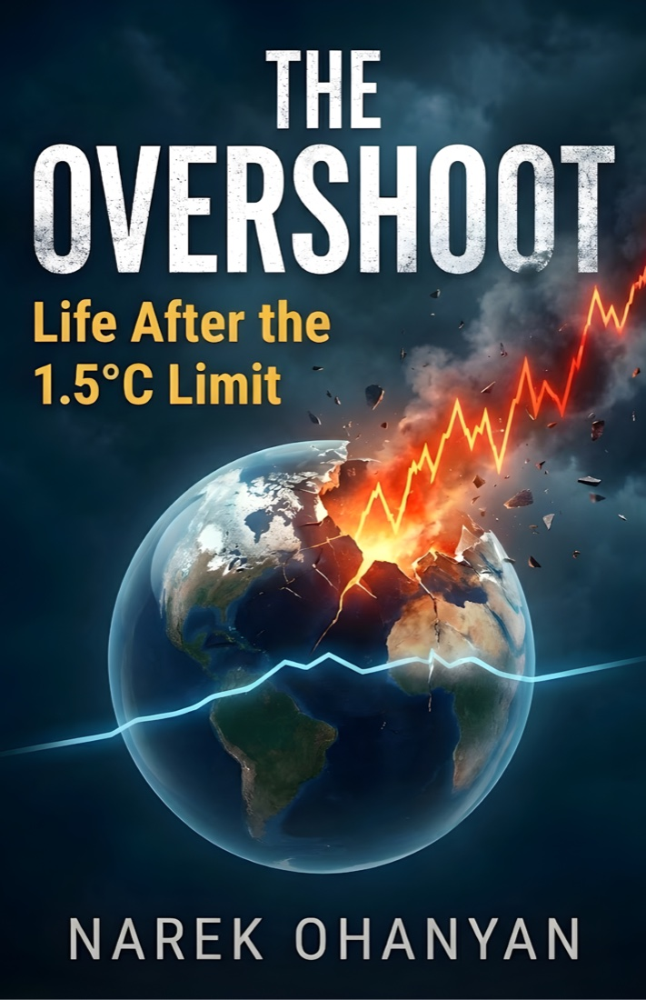
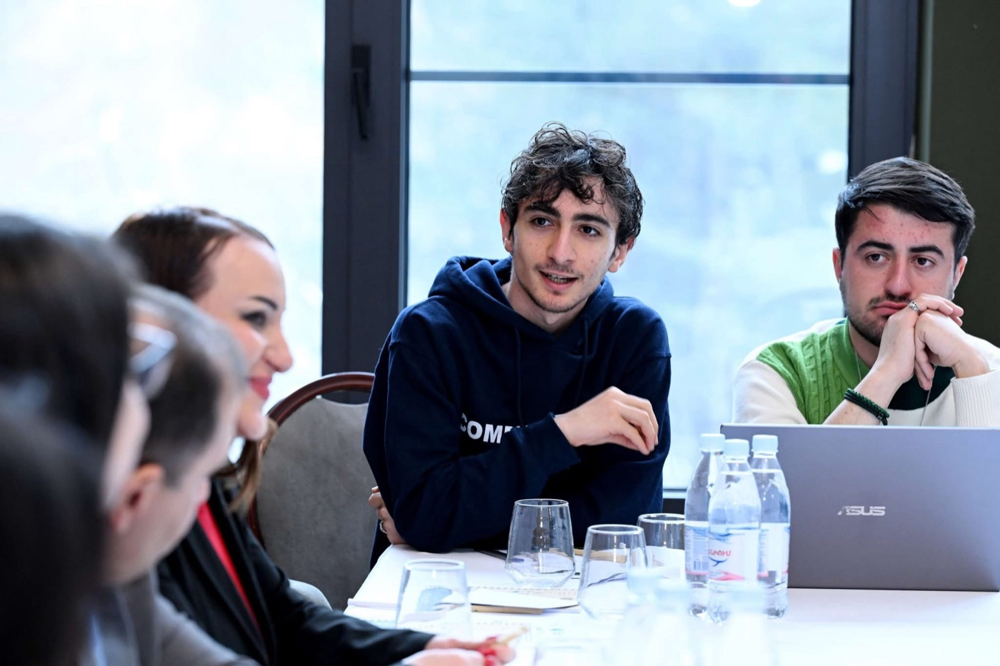
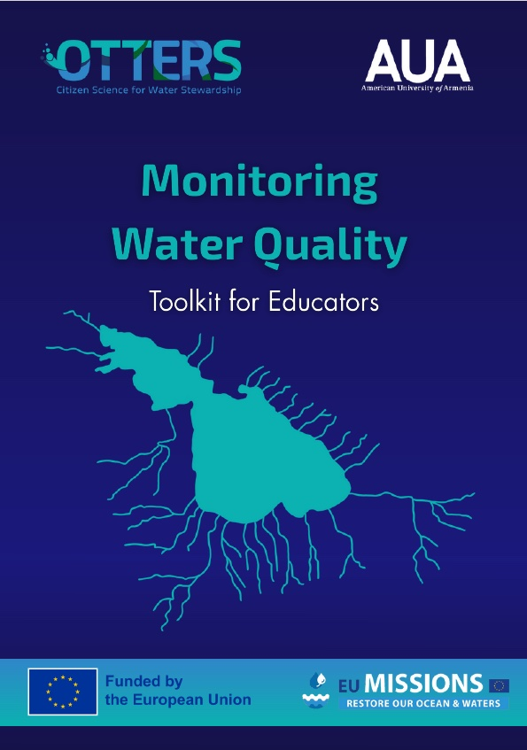
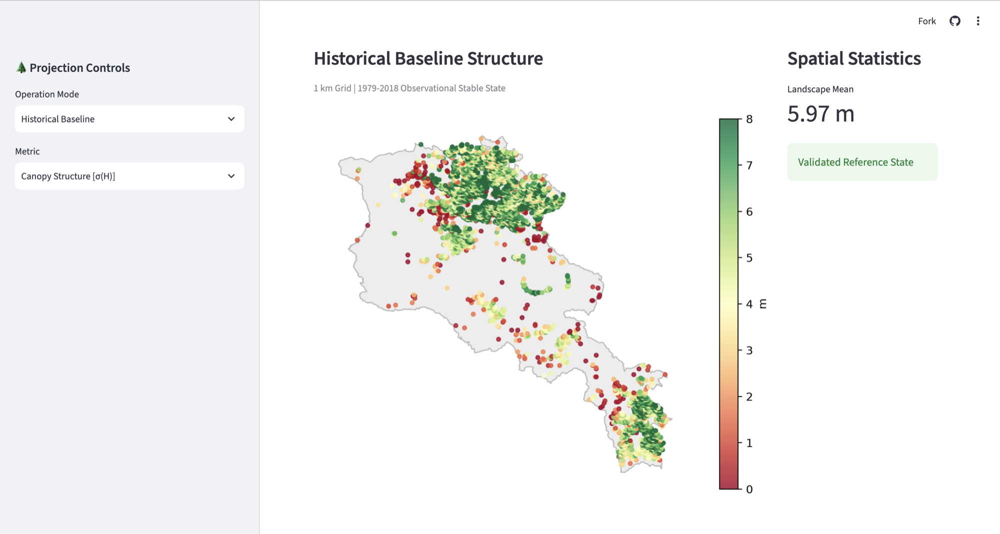

Computational infrastructure
- Python
- R
- Pangeo catalog
- Cloud-native computing
- Google Cloud Storage
Climate change & Earth system dynamics
Engineering cloud-native pipelines that move climate science from retrospective observation to actionable forecasting.
Research focus & field
My research is driven by the urgent need to understand, quantify, and adapt to the escalating impacts of global climate change. I operate at the intersection of computational data science, Earth system dynamics, and climate policy, focusing on how shifting atmospheric thermodynamics disrupt physical environments and the societies that depend on them.
Computer science is a methodology,
not an endpoint.
While my recent specialized work has centered on terrestrial macroecology and forest resilience, my broader scientific interest lies in untangling complex climate data to answer critical questions about environmental risk, tipping points, and planetary boundaries. By engineering cloud-native, high-throughput pipelines to process global-scale data (CMIP6, NetCDF), I build predictive systems that move climate science from retrospective observation to actionable forecasting.
Ultimately, my focus is on translating massive computational climate datasets into clear, evidence-based insights that drive climate-smart conservation, governance, and adaptation strategies.
Research experience
Guest Scientist Birmensdorf, Switzerland
Collaborating with domain experts to scale and refine predictive models of forest structural vulnerability. This work integrates CHELSA bioclimatic datasets and bias-corrected environmental data to validate macroecological assumptions regarding spatial carrying capacity and atmospheric stress.

Researcher Yerevan, Armenia
Developed a computational framework targeting Output 1.2 of the Forest Restoration and Climate Change in Armenia (FORACCA) initiative. Engineered a full-stack, automated pipeline to map long-term atmospheric stressors to static 3D forest structural outcomes.

Dilijan & Syunik regional forests, Armenia
Designed and executed an automated image processing pipeline to quantify carbon sequestration potentials via Leaf Area Index (LAI). Developed macro-driven binarization and structural analysis protocols on multi-temporal canopy datasets.

Author, The Overshoot: Life After the 1.5°C Limit
Published an independent monograph analyzing the systemic cascading effects of breaching key planetary boundaries, bridging physical climate realities with socio-environmental adaptation strategies.

January – June 2026 Yerevan, Armenia

March – June 2025 Yerevan, Armenia

Featured tool
Armenia Reforestation Predictive Framework v2.0 — in development at WSL
Originally developed as my BSCS capstone and actively expanding during my tenure at WSL, this framework models the biophysical limits of forest vertical structure under future IPCC CMIP6 scenarios (2041–2100).

Utilizes Pangeo infrastructure, xarray, and Google Cloud Storage to lazy-load massive CMIP6 NetCDF multi-model ensembles, bypassing traditional geoprocessing bottlenecks.
Avoids mathematical averaging artifacts by calculating Vapor Pressure Deficit (VPD) daily via the Clausius–Clapeyron relationship before aggregating into climatological epochs.
Space-for-time substitution normalizes stress integrals against the standard deviation of canopy height (σ(H)⁻¹) to account for the heightened hydraulic friction of complex canopies.
Deploys a Random Forest Regressor with Shapley Additive Explanations (SHAP) to unpack the ecophysiological drivers of canopy collapse — validating that atmospheric drying power is the primary constraint on vertical growth.
A dedicated page for the ecosystem will follow when v2.0 is ready.
Research skills & technical stack
Academic goals
Having established a robust foundation in spatial analytics, algorithmic design, and climate informatics, my primary objective is to pursue a Ph.D. in Earth System Science, Climate Dynamics, or a closely related discipline at a leading research institution.
Because I treat computer science as an adaptable toolkit rather than a restrictive discipline, I am eager to apply my computational background to a broad range of systemic climate questions — terrestrial ecohydrology, land–atmosphere interactions, atmospheric risk assessment, global tipping points. My goal is to fuse high-performance computing with foundational Earth science to develop next-generation predictive models that untangle complex Earth system dynamics and help humanity navigate the defining crisis of our time.